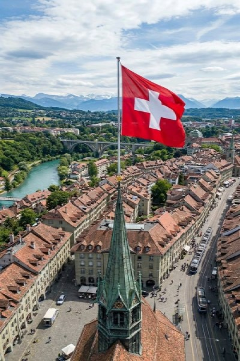
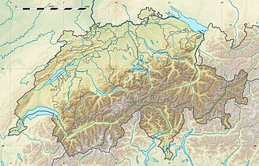
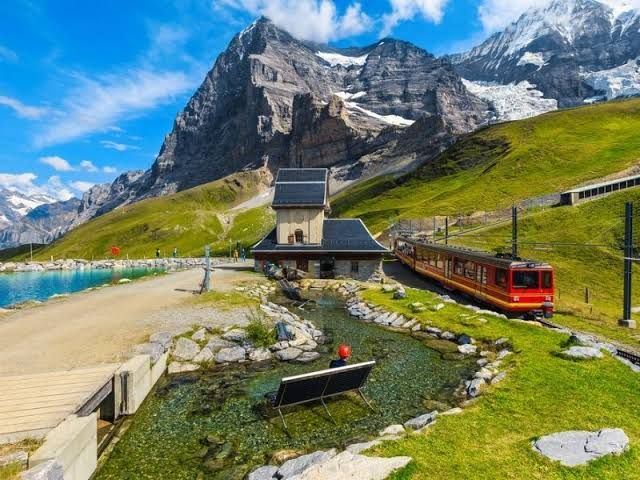
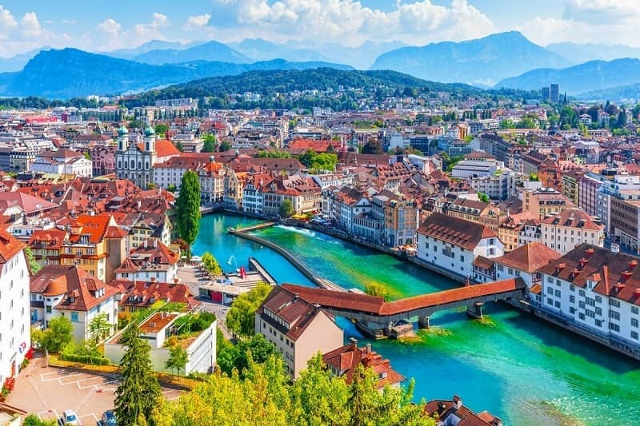
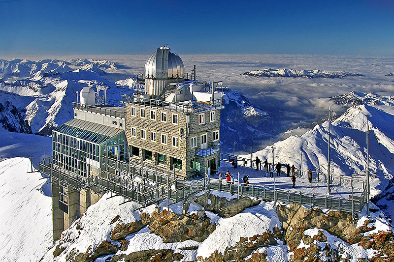

Sejarah

Menara Jam Zytglogge yang awalnya dibangun pada tahun 1218
sebagai gerbang pertahanan barat kota Bern sempat dialihfungsikan
menjadi penjara wanita, sebelum akhirnya dipasangi mekanisme jam
astronomi mekanis abad ke-16 yang rumit di area jalanan yang kini
dihiasi oleh bendera nasional berbentuk persegi sempurna—sebuah
simbol salib putih legendaris yang lahir dari identitas militer
Pertempuran Laupen tahun 1339.Kalimat 2: Keberadaan menara di
kota tua ini menjadi saksi bisu transformasi sejarah negara
tersebut, yang namanya sendiri diambil dari nama kanton perintis
kemerdekaan yaitu Schwyz, mulai dari masa konfederasi kuno tiga
kanton pada 1291, pengakuan status netralitas permanen pasca-Kongres
Wina 1815, hingga peresmian Bern sebagai pusat pemerintahan federal
modern yang damai hingga saat ini.
Swiss awalnya dibentuk pada tahun 1291 sebagai aliansi pertahanan tiga wilayah, lalu berkembang menjadi negara federal modern yang terkenal karena kebijakan netralitas abadi dan sistem demokrasi langsungnya.
Geografis

Swiss adalah negara terkurung daratan (landlocked) seluas 41.285 kilometer persegi
yang terletak di jantung Eropa Tengah. Secara astronomis dan geografis, negara ini berbatasan
langsung dengan lima negara tetangga, yaitu Jerman di utara, Prancis di barat, Italia di
selatan, serta Austria dan Liechtenstein di timur. Bentang alam Swiss yang unik secara
garis besar terbagi menjadi tiga wilayah topografi utama, yaitu Pegunungan Alpen yang
mendominasi sekitar 60% wilayah di bagian selatan dan timur, Pegunungan Jura di barat
laut, serta Dataran Tinggi Mittelland (Plato Swiss) yang membentang di antara kedua pegunungan tersebut.
Wilayah Mittelland yang subur ini berfungsi sebagai pusat aktivitas ekonomi, industri, sekaligus
menjadi rumah bagi mayoritas populasi Swiss. Selain dipenuhi puncak-puncak gunung tinggi yang puncaknya
tertutup salju abadi seperti Dufourspitze, Swiss juga dikenal sebagai salah satu pusat hidrografi
penting di Eropa. Negara ini menyimpan sekitar 6% cadangan air tawar benua Eropa yang tersebar di
ribuan gletser dan lebih dari 1.500 danau indah, termasuk Danau Jenewa dan Danau Constance, serta
menjadi hulu bagi sungai-sungai besar Eropa seperti Sungai Rhein dan Sungai Rhone.
Wisata

Kleine Scheidegg merupakan salah satu destinasi wisata paling ikonik di wilayah Bernese Oberland,
Swiss, yang menjadi jalur transit utama menuju puncak gletser terkenal, Jungfraujoch - Top of Europe.
Terletak tepat di kaki dinding utara Gunung Eiger yang megah, kawasan ini menyuguhkan panorama alam
bak negeri dongeng dengan perpaduan padang rumput hijau yang subur, danau jernih seperti Fallbodensee,
serta latar belakang puncak pegunungan Alpen yang diselimuti salju abadi. Keunikan utama dari tempat
ini adalah lintasan Kereta Api Jungfrau (Jungfraubahn), yaitu kereta merah legendaris yang membelah
perbukitan untuk membawa wisatawan mendaki hingga ke stasiun kereta tertinggi di Eropa. Pada musim panas,
kawasan ini menjadi surga bagi para pencinta hiking dan fotografi alam, sementara pada musim dingin
berubah menjadi resor ski kelas dunia yang memukau.
Kota Lucerne (Luzern)

Kota tua Lucerne di Swiss ini memancarkan pesona magis melalui kombinasi arsitektur abad
pertengahan dan keindahan alamnya yang spektakuler. Sungai Reuss yang mengalir membelah
kota menampilkan air yang sangat jernih dengan gradasi warna hijau toska yang memesona,
dilintasi oleh Jembatan Kapellbrücke, sebuah jembatan kayu bersejarah yang menjadi simbol
kebanggaan kota ini. Deretan bangunan beratap merah yang ikonik berdiri kokoh di sepanjang
tepi sungai, sementara kemegahan Pegunungan Alpen yang menjulang tinggi di latar belakang
menyempurnakan lanskap ini menjadi sebuah pemandangan yang tampak seperti lukisan nyata.
Observatorium Sphinx

Bangunan megah yang bertengger di atas puncak gunung bersalju ini adalah Observatorium Sphinx,
sebuah stasiun penelitian astronomi dan meteorologi yang terletak di Jungfraujoch, Swiss.
Berada di ketinggian 3.571 meter di atas permukaan laut, observatorium ini merupakan salah
satu struktur bangunan tertinggi di Eropa dan berfungsi sebagai laboratorium sains global
sekaligus destinasi wisata ikonik Pegunungan Alpen. Kompleks bangunan ini dilengkapi dengan
kubah astronomi perak, teras observasi kaca yang menyuguhkan pemandangan panorama gletser di
sekitarnya, serta dek terbuka bagi para pengunjung untuk menikmati pemandangan lautan awan yang menakjubkan.